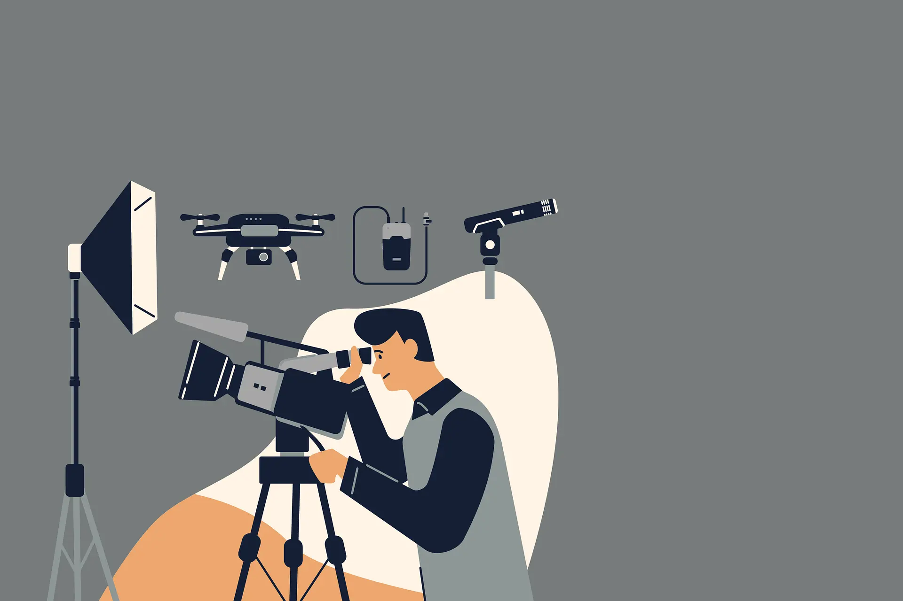

El mundo de la fotografía está experimentando una revolución gracias al uso cada vez más extendido de drones en la filmación aérea. En Flymovie, estamos a la vanguardia de estas tendencias, ofreciendo a fotógrafos y cineastas nuevas herramientas y técnicas para capturar imágenes espectaculares desde el cielo.
Una de las tendencias más destacadas es el uso de drones para fotografía de paisajes. Estos dispositivos permiten a los fotógrafos obtener vistas panorámicas impresionantes que antes solo eran posibles con equipos costosos y complicados de manejar. Desde la fotografía de naturaleza hasta la arquitectura urbana, los drones ofrecen nuevas perspectivas que inspiran la creatividad y la imaginación.
Otra tendencia emergente es el uso de drones en fotografía de eventos. Bodas, conciertos, festivales y otros eventos pueden beneficiarse enormemente de las tomas aéreas que ofrecen los drones. Capturar momentos especiales desde el aire agrega un nivel de emoción y dramatismo a las fotografías, creando recuerdos que perduran para siempre.
Los drones también están cambiando la forma en que se realizan producciones audiovisuales. Los fotógrafos y cineastas pueden usar drones para filmar videos promocionales, comerciales y documentales con calidad cinematográfica. Esta versatilidad hace que los drones sean una herramienta invaluable para cualquier profesional de la fotografía que busque expandir sus horizontes creativos.
Además de ofrecer nuevas oportunidades creativas, los drones también son una opción más accesible y económica en comparación con métodos tradicionales de filmación aérea. Esto significa que incluso los fotógrafos independientes y las pequeñas empresas pueden incorporar imágenes aéreas impresionantes en sus proyectos sin tener que invertir una fortuna.
En Flymovie, estamos comprometidos a seguir siendo líderes en la industria de la filmación aérea y a proporcionar a los fotógrafos las herramientas y el conocimiento que necesitan para sobresalir en un mundo cada vez más visual y competitivo.
